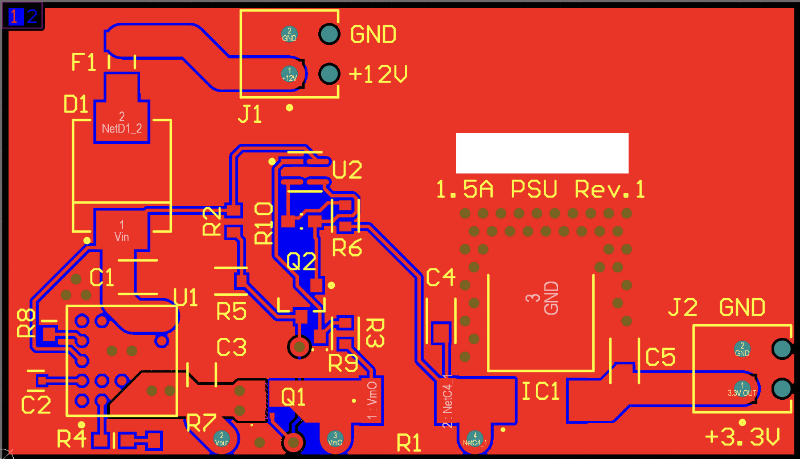
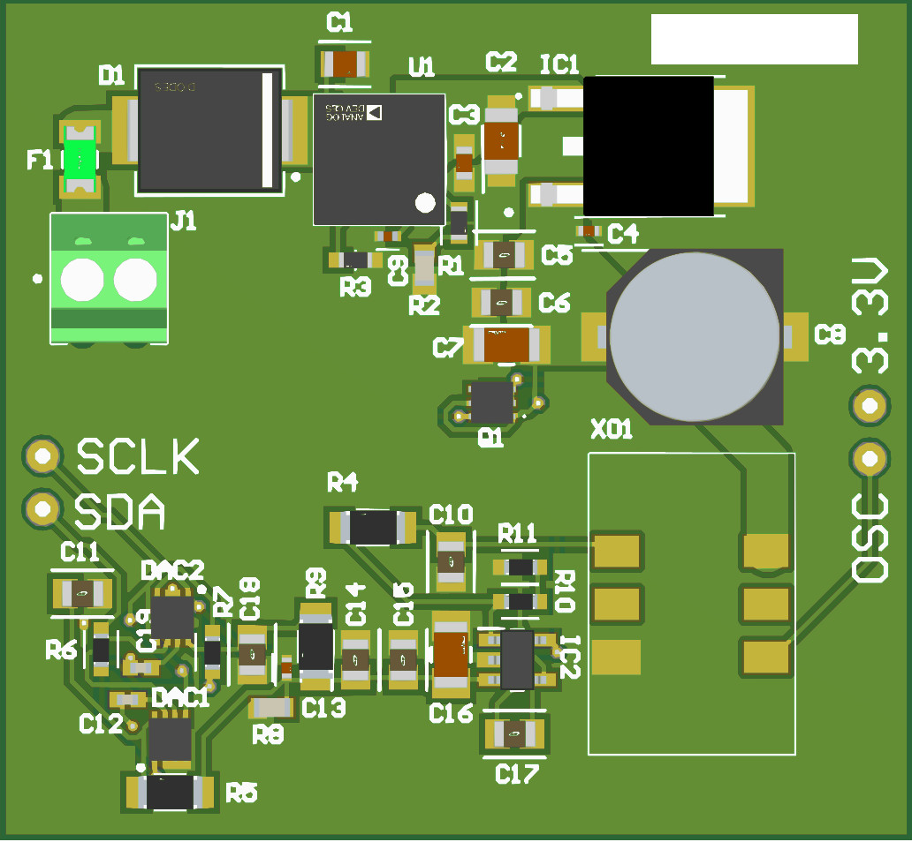

This project saw many design revisions, and would not have been possible without the work of Ben Nelson and Ethan
Heckman, my partners in crime for this project. This was, in fact, my senior project for my undergraduate degree. I
can not speak on the programming side of the project, as that was all handled by Ethan. The circuit design was
mostly handled by Ben, with little contributions from me. The PCB layout was done by yours truly. This project took
shape over an entire semester, with a variety of different revisions and a few test boards. Unfortunately, due to a
mis-ordered component, the final board never worked, however, our breadboard test version did!
I am mostly going to be focusing on the PCB layout as that was my part in the project. My part in the project
started with the layout of a high current (1.5A continuous) hybrid (switched-mode pre-regulator and
linear post-regulator) power supply. This produces a few layout problems, mainly one of trace resistance and
thermals. I proceeded by performing calculations to determine trace width and going completely overkill on heat
dissipation. The traces ended up at 80+ mil width, and the thermals were handled with 2 massive ground planes on
either side of the board, covering most of the area not covered by components, as well as via stitching around the
LDO (low dropout regulator).

This board served as a test bench for the power supply's noise and current capabilities. After this design was
verified, the power supply was incorporated into a final board design that contained the ovenized VCXO as well.
